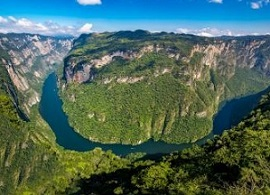
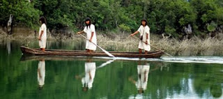
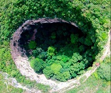
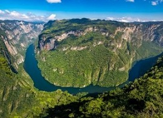
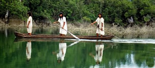
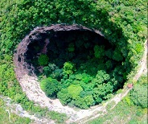

Cañon del Sumidero |
 Lagos de Montebello |
 Cascada el Chiflon |
 Cascadas de Agua Azul |
Selva la Candona |
Sima de las Cotorras |
Chiapas se localiza al sureste de México; colinda al norte con el estado de Tabasco, al oeste con Veracruz y Oaxaca, al sur con el Océano Pacífico y al este con la República de Guatemala. Al norte 17°59', al sur 14°32’ de latitud norte; al este 90°22', al oeste 94°14' de longitud oeste.Colinda al norte con Tabasco; al este con la República de Guatemala; al sur con la República de Guatemala y el Océano Pacífico; al oeste con el Océano Pacífico, Oaxaca y Veracruz-Llave.
Más de la mitad de su territorio, el 54%, presenta clima Cálido húmedo, el 40% clima Cálido subhúmedo, el 3% Templado húmedo y el 3% restante tiene clima Templado subhúmedo.La temperatura media anual, varía dependiendo de la región, de 18°C en los Altos de Chiapas, a 28°C en la Llanura Costeña.La temperatura promedio más alta es de 30°C y la mínima de 17.5°C.La región norte del estado presenta lluvias todo el año, en el resto de la entidad, abundantes lluvias en verano. La precipitación total anual varía, dependiendo de la región, de 1 200 mm a 4 000 mm (Soconusco).
turiChiapas, te invita a descubrir uno de los estados más hermosos de la República Mexicana que atrae cada año a miles de turistas, no solo por la gran cantidad de atractivos naturales que tiene, también porque es uno de los lugares con los poblados coloniales más bellos. Es un destino que con los años ha tomado fuerza hasta convertirse, hoy en día, en uno de los más importantes sitios para hacer viajes de aventura y ecoturismo en México.
Cañon del Sumidero |
Lagos de Montebello |
Cascada el Chiflon |
Cascadas de Agua Azul |
Selva la Candona |
Sima de las Cotorras |